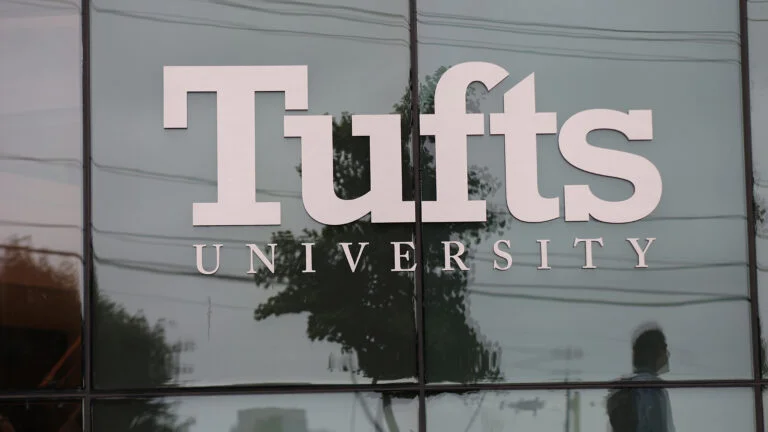

01

塔夫茨大学起诉要求恢复因办公室性行为被解雇的教授
Tufts sues after order to reinstate professor fired for sexual activity in his office
一名学生去年向塔夫茨大学管理层报告该教授，称听到他办公室传出的“性声音”。
A student reported the professor to Tufts administration last year after they heard 'sexual noises' coming from his office.
Boston.com · 2026-10-26
原始报道 / Original source ↗02
佩顿·普里查德在科德角的疯狂 offseason 训练计划
Payton Pritchard has a wild offseason workout regimen on Cape Cod
普里查德的训练计划包括如果他当天投篮命中率低于60%，他的防守者将享受丰盛的Chipotle餐。
'They'll get breaks, he won't, and if Pritchard shoots under 60 [percent] on the day, his defenders eat like kings at Chipotle and then send him the bill.'
Boston.com · 2026-10-26
原始报道 / Original source ↗03
AGNT公司、美国房屋服务、凯勒·威廉姆斯、REMAX创建共享房源平台以对抗私人房源
AGNT Inc., HomeServices of America, Keller Williams, REMAX create shared listing platform to combat private listings
这些经纪公司表示，新平台Open Real Estate将提升市场透明度，以应对私人房源的威胁。
The brokerages said the new platform, Open Real Estate, will boost market transparency as it comes under threat from private listings.
Boston Agent Magazine · 2026-10-26
原始报道 / Original source ↗04

马萨诸塞州和爱达荷州将枪支问题列入投票议程
Massachusetts and Idaho put guns on the ballot. One seeks to restrict them, the other to honor them.
马萨诸塞州第9号提案若获得选民批准，将继续实施由民主党主导立法机构通过的一系列枪支限制。
Should voters approve it, Massachusetts Question 9 will continue an array of gun restrictions passed overwhelmingly by the Democratic-led Legislature.
Boston.com · 2026-10-25
原始报道 / Original source ↗